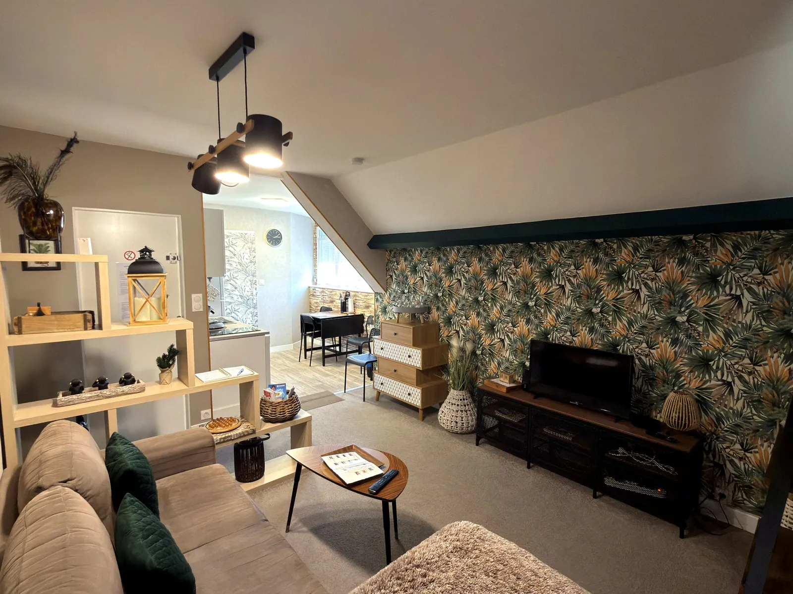
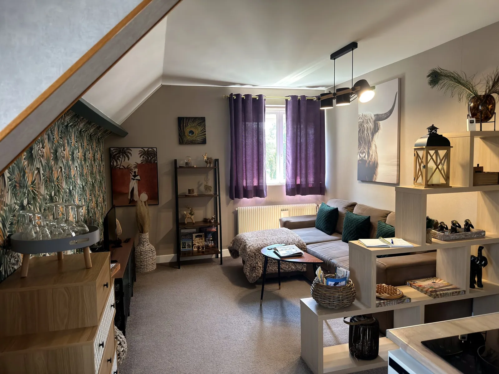
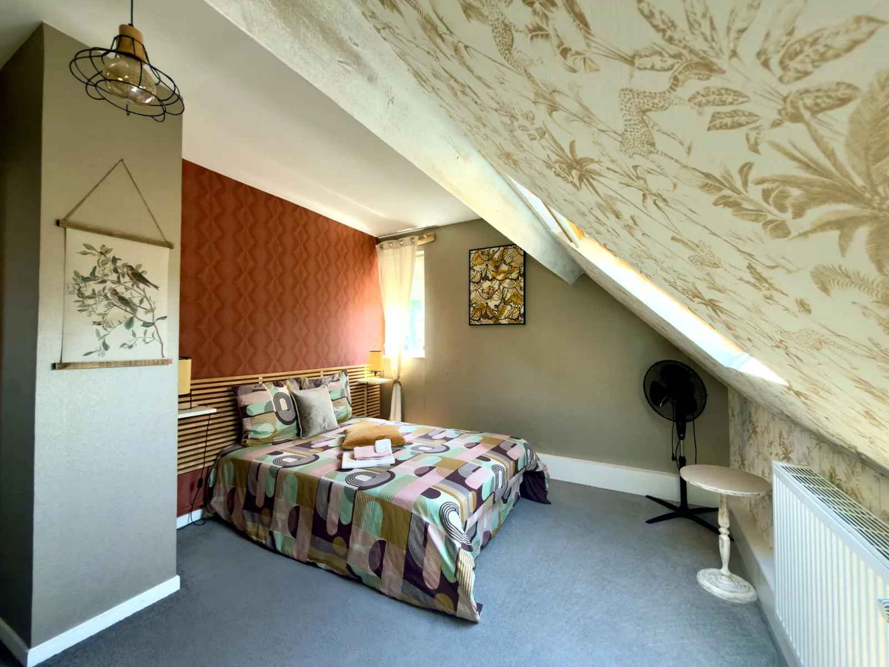
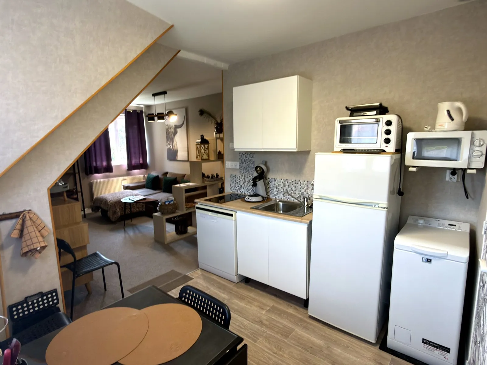
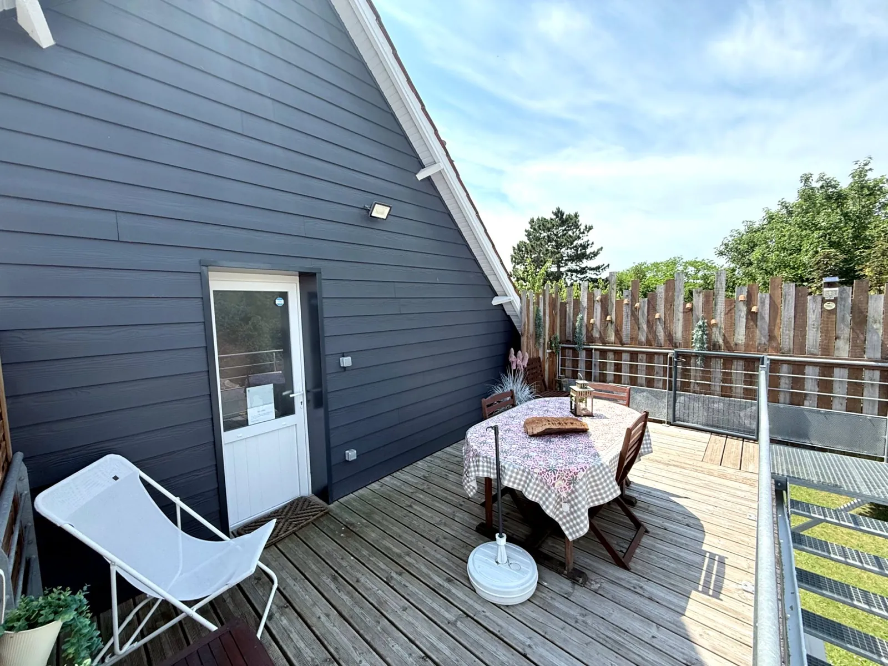

Un séjour cosy
Un espace salon chaleureux et décoré avec soin pour se détendre après une journée sur la côte.
Gîte cosy à Étaples · Côte d’Opale
Un appartement soigneusement décoré pour profiter d’un séjour simple, confortable et reposant à quelques minutes du Touquet.
Situé à Étaples-sur-Mer, le Gîte Pipiou vous accueille dans un appartement chaleureux, lumineux et décoré avec soin. Les matières naturelles, les touches végétales et les couleurs douces créent une vraie parenthèse sur la Côte d’Opale.
L’adresse est idéale pour un week-end, quelques jours au bord de mer ou une escapade entre Étaples, Le Touquet et les plages environnantes.

L’esprit du lieu

Un espace salon chaleureux et décoré avec soin pour se détendre après une journée sur la côte.

Une chambre calme, aux tons naturels et rosés, pensée pour un vrai moment de repos.

Tout le nécessaire pour préparer vos repas simplement pendant votre séjour.

Un espace extérieur pour prendre un café, déjeuner ou profiter des beaux jours.
Confort
Des équipements simples et utiles pour se sentir rapidement comme chez soi.
Photos
Terrasse, salon, séjour, chambre, cuisine et salle de bains : découvrez chaque espace du Gîte Pipiou.
À faire autour du gîte
Depuis le Gîte Pipiou, profitez facilement d’Étaples-sur-Mer, du Touquet, de la baie de Canche et des grands espaces de la Côte d’Opale.
Que vous veniez pour un week-end reposant, une escapade en famille ou quelques jours au bord de mer, le Gîte Pipiou permet de profiter facilement des incontournables de la Côte d’Opale. Entre port de pêche, balades nature, plage, patrimoine et bonnes adresses, chacun peut composer son séjour à son rythme.
À proximité du gîte, Étaples-sur-Mer offre une ambiance maritime authentique. Le port, les quais, les restaurants et les balades en ville permettent de découvrir une facette simple et vivante de la Côte d’Opale.
Découvrir ÉtaplesMaréis est une visite incontournable à Étaples. Ce centre de découverte permet de mieux comprendre la pêche en mer, les métiers maritimes, les aquariums et la vie des marins-pêcheurs. Une sortie intéressante pour les adultes comme pour les enfants.
Découvrir MaréisÀ quelques minutes du gîte, Le Touquet permet de profiter de la plage, du centre-ville, des commerces, du marché, des restaurants et d’une ambiance balnéaire très appréciée. C’est une sortie idéale pour une journée ou une soirée.
Voir Le TouquetLa baie de Canche est un espace naturel remarquable, propice aux balades, à l’observation des paysages dunaires et aux moments au grand air. C’est une belle idée de sortie pour profiter de la nature sans s’éloigner du gîte.
Voir les espaces naturelsLes plages de la Côte d’Opale sont idéales pour marcher, respirer, profiter d’un coucher de soleil ou simplement prendre le temps. Entre Étaples, Le Touquet, Sainte-Cécile et les communes voisines, les paysages changent au fil des marées et des saisons.
Idées de sortiesEntre Étaples et Le Touquet, le séjour peut aussi se vivre à table : restaurants, produits de la mer, marché, adresses gourmandes et spécialités locales permettent de découvrir la Côte d’Opale autrement.
Explorer les bonnes adressesBalade sur le port d’Étaples, dîner au restaurant, promenade au Touquet et moment au calme sur la terrasse du gîte.
Visite de Maréis, sortie plage, découverte de la baie de Canche et balade dans les rues animées du Touquet.
Balade dans les dunes, observation des paysages de la baie, promenade sur le littoral et retour au gîte pour profiter d’un séjour reposant.
Autour du gîte
Le Gîte Pipiou est idéalement situé pour profiter d’Étaples-sur-Mer, du Touquet et de la Côte d’Opale sans multiplier les longs trajets.
Avis clients
Réservation
Pour connaître les disponibilités, les tarifs à jour et finaliser votre réservation, consultez l’annonce officielle du gîte.